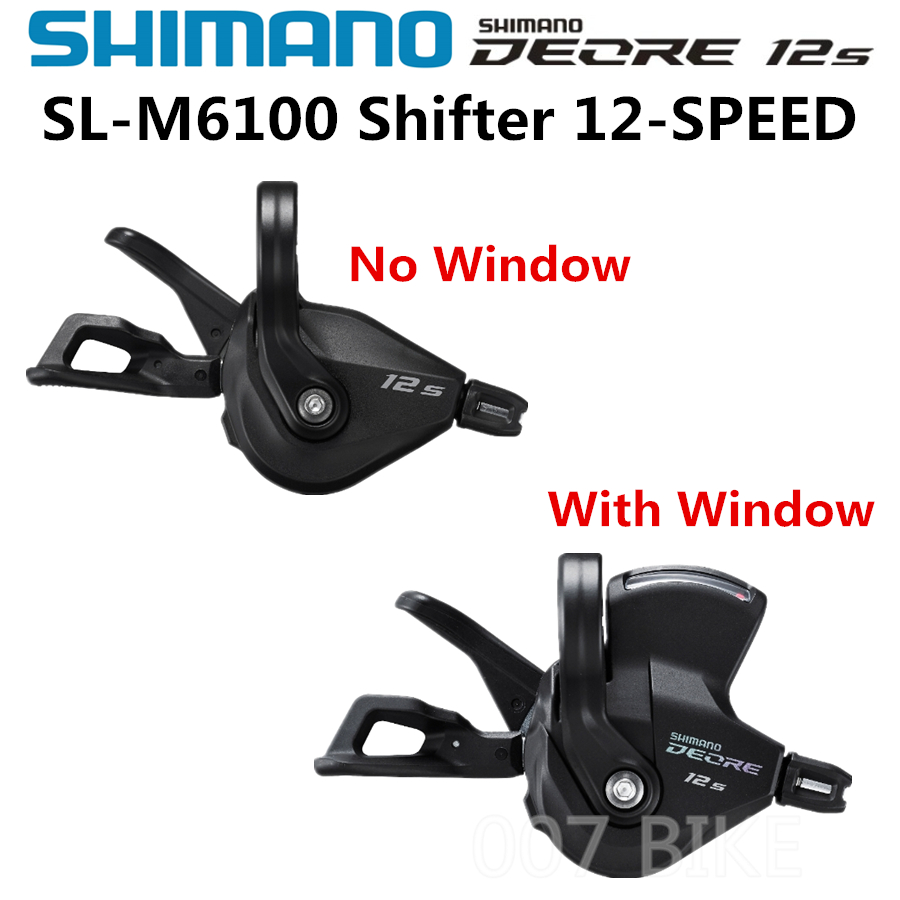

A shift lever is a component of a bicycle which is used to change the gear. It is usually found on the handlebars, and is connected to the derailleur. This allows the cyclist to switch between different gears, depending on the terrain, the speed they are travelling, or the amount of effort they wish to exert.